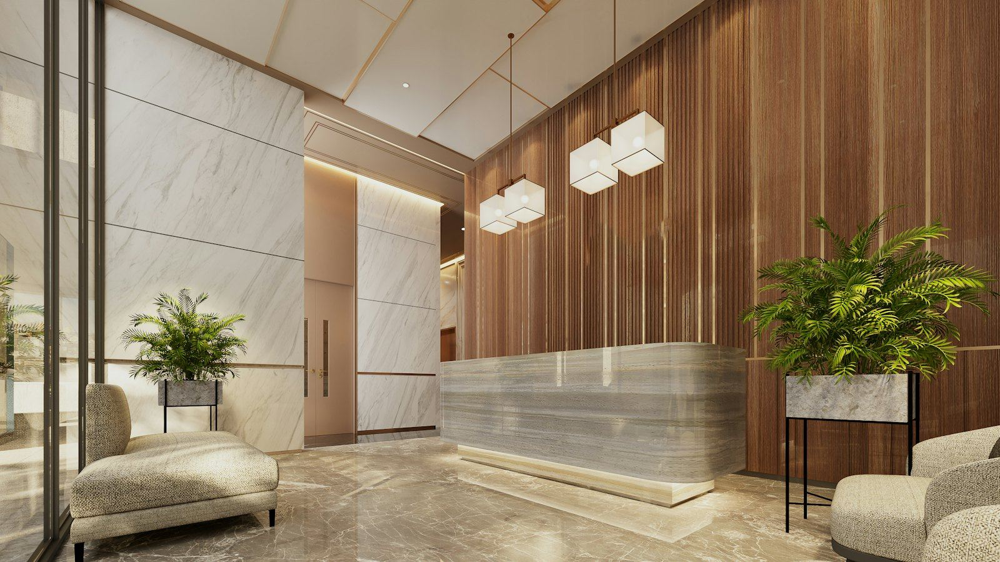

L'art de la satisfaction client
Réputé pour être le meilleur rapport qualité-prix du Gabon, l'Hôtel Hibiscus est devenu le choix naturel des voyageurs locaux comme des touristes.
Nos deux établissements, à Louis et sur le boulevard Triomphal, sont à quelques pas de l'océan et des centres commerciaux, à 20 minutes de l'aéroport Léon Mba.
Fibre optique, secours eau et électricité, piscines, restaurants et Luxor Lounge : notre équipe travaille chaque jour pour un séjour confortable et sans interruption.
Tout pour un séjour sans souci
Piscines adultes & enfants
Accès gratuit, eau contrôlée, entourées d'arbres.
Fibre optique
L'une des connexions les plus rapides de la ville.
Secours eau & électricité
Groupe et réserve d'eau : aucune coupure.
2 restaurants & snack-bar
Saveurs locales et européennes.
Salle de sport
Pour garder le rythme pendant vos déplacements.
Luxor Lounge
Le lounge de Hibiscus Louis, pour vos soirées.
Parking gratuit
Et bagagerie à la réception.
À 20 min de l'aéroport
En plein centre, près de l'océan.
Infos pratiques
Quelle différence entre les deux hôtels ?
Hibiscus Louis est proche de l'océan et accueille le Luxor Lounge et les mariages ; Hibiscus Boulevard Triomphal est au cœur du quartier des affaires. Mêmes standards de confort.
Le Wi-Fi est-il fiable ?
Oui : fibre optique, l'une des connexions les plus rapides des hôtels de la ville, gratuite pour nos clients.
Y a-t-il des coupures d'eau ou d'électricité ?
Nos hôtels disposent de systèmes de secours pour l'eau et l'électricité.
La piscine est-elle accessible aux enfants ?
Oui, une piscine dédiée aux enfants, gratuite pour les clients de l'hôtel.
Peut-on laisser ses bagages après le départ ?
Oui, la bagagerie de la réception est à votre disposition, 24 h/24.
Un séjour à Libreville ?
Choisissez votre hôtel, vos dates et votre chambre : confirmation rapide sur WhatsApp.